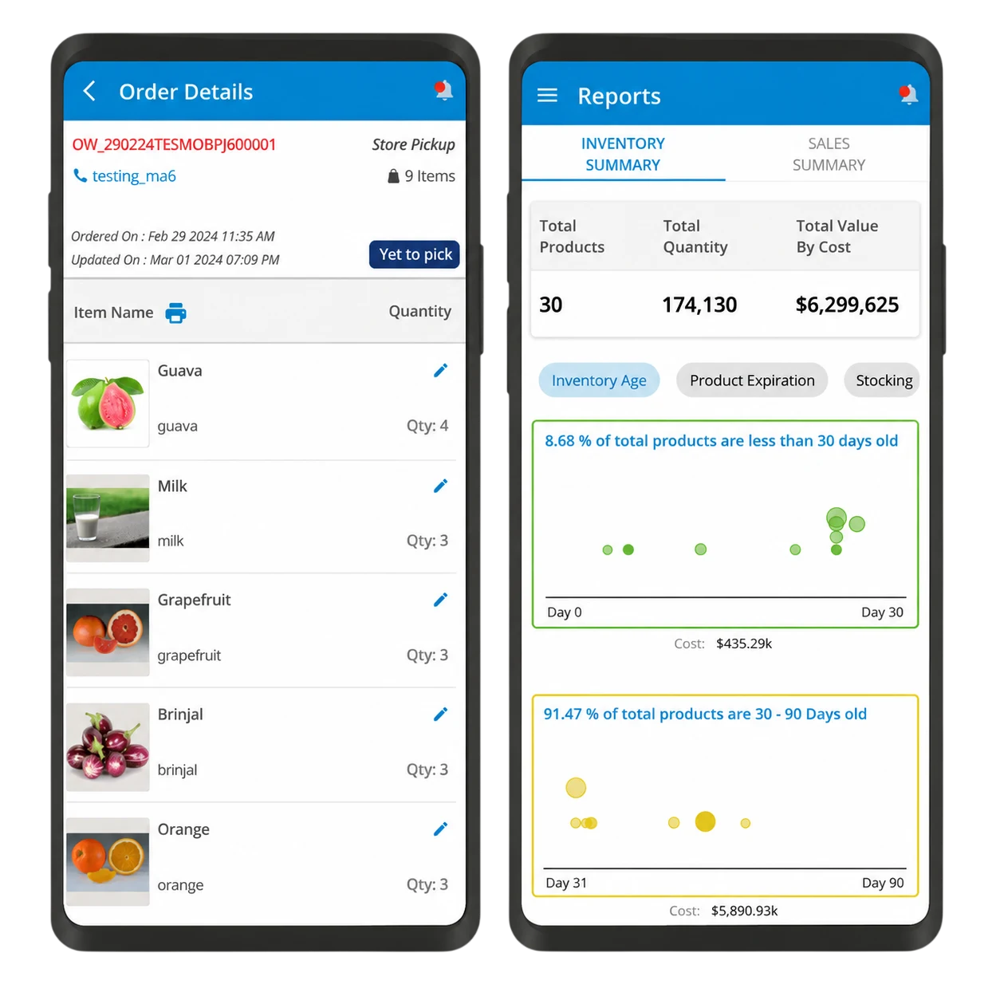
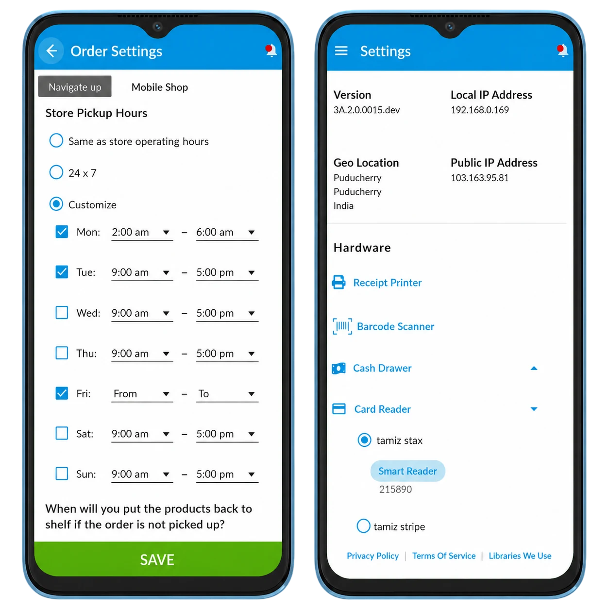

SHELFPERKS
Retail Operations & Store Management App
ShelfPerks helps retail businesses streamline daily operations, manage inventory and reports, and deliver a smoother in-store experience through one practical mobile workflow.
Enhanced Operational Efficiency
ShelfPerks streamlines retail operations, reduces manual tasks, and improves overall efficiency, enabling store owners to focus on delivering exceptional customer experiences.
Increased Sales & Revenue
By providing store owners with powerful tools to manage inventory, process transactions, and analyze sales data, ShelfPerks helps drive sales growth and increase revenue.
Improved Customer Satisfaction
With its intuitive interface and seamless checkout experience, ShelfPerks enhances the overall shopping experience for customers, leading to increased satisfaction and loyalty.


ABOUT SHELFPERKS
The retail industry faces numerous challenges, including inefficient store operations, manual inventory management processes, and the need for seamless integration between different systems. Store owners often struggle to find a comprehensive solution that addresses these challenges while remaining easy to adopt and use.
By implementing ShelfPerks, retail businesses have experienced significant improvements in their operations. The system has streamlined day to day tasks such as processing transactions, managing inventory, and generating reports, leading to increased efficiency and productivity. Real-time insights and analytics provided by ShelfPerks have enabled store owners to make data-driven decisions and optimize their operations for better performance.
As a result, retail businesses using ShelfPerks have seen increased sales, improved customer satisfaction, and overall growth in their business.